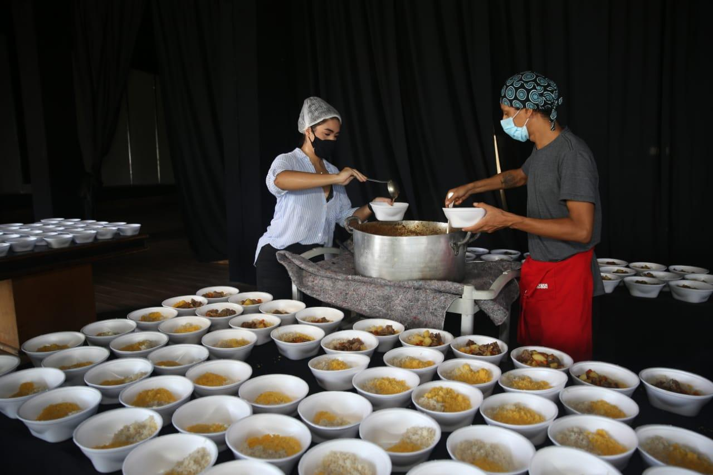

Quem somos
A Comida para Todos é uma organização não governamental (ONG) sem fins lucrativos, nascida da união de cidadãos com o propósito de combater a fome e a insegurança alimentar em nossa comunidade. Acreditamos que o acesso à alimentação de qualidade é um direito humano fundamental e um pilar para a dignidade.
Fale conosco!
endereço: Avenida João Pessoa 6943, bairro: Parangaba, cep: 60710-735
Foraleza, CE
telefone: (85) 99881-5658
email: foodforall@foodforall.com